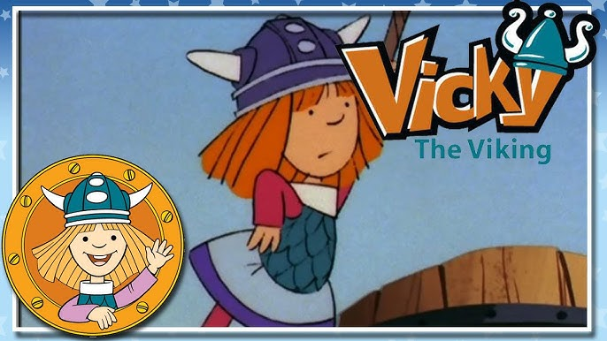

Who is Eiichiro Oda?

Born on January 1, 1975, in Kumamoto, Japan, Oda developed a passion for manga at a young age, inspired by works like Akira Toriyama's "Dragon Ball" and the TV series "Vicky the Viking"
Before achieving fame with "One Piece," Oda worked as an assistant to other manga artists, including Nobuhiro Watsuki on "Rurouni Kenshin". He gained recognition early in his career with his pirate-themed one-shot stories, "Romance Dawn", which eventually led to the creation of One Piece
Oda's storytelling is characterized by its intricate plots, emotional depth, and a perfect blend of humor and action. The series explores themes of friendship, freedom, and the pursuit of dreams, resonating with readers of all ages. The diverse cast of characters, each with unique abilities and backstories, adds richness to the narrative.
Oda's dedication to his craft is well-known, often working long hours and maintaining a rigorous schedule. Despite his health challenges, including high blood pressure and diabetes, Oda continues to engage with fans and produce high-quality work.
"One Piece" has become a cultural phenomenon, not just in Japan but globally. It holds the "Guinness World Record" for the most copies published for the same comic book series by a single author, with over 523 million copies in circulation worldwide. The series has inspired an extensive media franchise, including an anime adaptation, feature films, video games, and a wide range of merchandise.
As "One Piece" approaches its climactic conclusion, fans eagerly await the resolution of its many plotlines and the ultimate revelation of the elusive One Piece treasure. Oda has hinted at exciting developments and surprises, ensuring that the journey will continue to captivate and entertain.